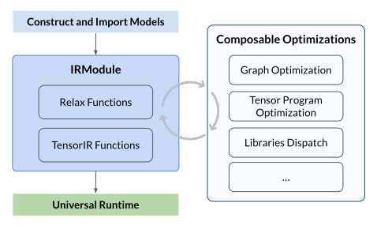

Note
You can click here to run the Jupyter notebook locally.
Quick Start#
This tutorial is for people who are new to Apache TVM. Taking an simple example to show how to use Apache TVM to compile a simple neural network.
Overview#
Apache TVM is a machine learning compilation framework, following the principle of Python-first development and universal deployment. It takes in pre-trained machine learning models, compiles and generates deployable modules that can be embedded and run everywhere. Apache TVM also enables customizing optimization processes to introduce new optimizations, libraries, codegen and more.
Apache TVM can help to:
Optimize performance of ML workloads, composing libraries and codegen.
Deploy ML workloads to a diverse set of new environments, including new runtime and new hardware.
Continuously improve and customize ML deployment pipeline in Python by quickly customizing library dispatching, bringing in customized operators and code generation.
Overall Flow#
Then we will show the overall flow of using Apache TVM to compile a neural network model, showing how to optimize, deploy and run the model. The overall flow is illustrated as the figure:
{kind=link}

The overall flow consists of the following steps:
Construct or Import a Model: Construct a neural network model or import a pre-trained model from other frameworks (e.g. PyTorch, ONNX), and create the TVM IRModule, which contains all the information needed for compilation, including high-level Relax functions for computational graph, and low-level TensorIR functions for tensor program.
Perform Composable Optimizations: Perform a series of optimization transformations, such as graph optimizations, tensor program optimizations, and library dispatching.
Build and Universal Deployment: Build the optimized model to a deployable module to the universal runtime, and execute it on different devices, such as CPU, GPU, or other accelerators.
Construct or Import a Model#
Before we get started, let’s construct a neural network model first. In this tutorial, to make things simple, we will define a two-layer MLP network directly in this script with the TVM Relax frontend, which is a similar API to PyTorch.
import tvm
from tvm import relax
from tvm.relax.frontend import nn
class MLPModel(nn.Module):
def __init__(self):
super().__init__()
self.fc1 = nn.Linear(784, 256)
self.relu1 = nn.ReLU()
self.fc2 = nn.Linear(256, 10)
def forward(self, x):
x = self.fc1(x)
x = self.relu1(x)
x = self.fc2(x)
return x
Then we can export the model to TVM IRModule, which is the central intermediate representation in TVM.
mod, param_spec = MLPModel().export_tvm(
spec={"forward": {"x": nn.spec.Tensor((1, 784), "float32")}}
)
mod.show()
# from tvm.script import ir as I
# from tvm.script import relax as R
@I.ir_module
class Module:
@R.function
def forward(x: R.Tensor((1, 784), dtype="float32"), fc1_weight: R.Tensor((256, 784), dtype="float32"), fc1_bias: R.Tensor((256,), dtype="float32"), fc2_weight: R.Tensor((10, 256), dtype="float32"), fc2_bias: R.Tensor((10,), dtype="float32")) -> R.Tensor((1, 10), dtype="float32"):
R.func_attr({"num_input": 1})
with R.dataflow():
permute_dims: R.Tensor((784, 256), dtype="float32") = R.permute_dims(fc1_weight, axes=None)
matmul: R.Tensor((1, 256), dtype="float32") = R.matmul(x, permute_dims, out_dtype=None)
add: R.Tensor((1, 256), dtype="float32") = R.add(matmul, fc1_bias)
relu: R.Tensor((1, 256), dtype="float32") = R.nn.relu(add)
permute_dims1: R.Tensor((256, 10), dtype="float32") = R.permute_dims(fc2_weight, axes=None)
matmul1: R.Tensor((1, 10), dtype="float32") = R.matmul(relu, permute_dims1, out_dtype=None)
add1: R.Tensor((1, 10), dtype="float32") = R.add(matmul1, fc2_bias)
gv: R.Tensor((1, 10), dtype="float32") = add1
R.output(gv)
return gv
Perform Optimization Transformations#
Apache TVM leverage pipeline to transform and optimize program.
The pipeline encapsulates a collection of transformation that gets two goals (at the same level):
Model optimizations: such as operator fusion, layout rewrites.
Tensor program optimization: Map the operators to low-level implementations (both library or codegen)
Note
The twos are goals but not the stages of the pipeline. The two optimizations are performed at the same level, or separately in two stages.
Note
In this tutorial we only demonstrate the overall flow, by leverage zero optimization
pipeline, instead of optimizing for any specific target.
mod = relax.get_pipeline("zero")(mod)
Build and Universal Deployment#
After the optimization, we can build the model to a deployable module and run it on different devices.
import numpy as np
target = tvm.target.Target("llvm")
ex = tvm.compile(mod, target)
device = tvm.cpu()
vm = relax.VirtualMachine(ex, device)
data = np.random.rand(1, 784).astype("float32")
tvm_data = tvm.runtime.tensor(data, device=device)
params = [np.random.rand(*param.shape).astype("float32") for _, param in param_spec]
params = [tvm.runtime.tensor(param, device=device) for param in params]
print(vm["forward"](tvm_data, *params).numpy())
[[27581.104 26398.92 25783.322 26971.762 26620.943 26277.504 26048.5
25143.566 26290.004 26252.35 ]]
Our goal is to bring machine learning to the application with any language of interest, with the minimum runtime support.
Each function in IRModule becomes a runnable function in the runtime. For example in LLM cases, we can call
prefillanddecodefunctions directly.prefill_logits = vm["prefill"](inputs, weight, kv_cache) decoded_logits = vm["decode"](inputs, weight, kv_cache)
TVM runtime comes with native data structures, such as Tensor, can also have zero copy exchange with existing ecosystem (DLPack exchange with PyTorch)
# Convert PyTorch tensor to TVM Tensor x_tvm = tvm.runtime.from_dlpack(x_torch) # Convert TVM Tensor to PyTorch tensor x_torch = torch.from_dlpack(x_tvm)
TVM runtime works in non-python environments, so it works on settings such as mobile
// C++ snippet runtime::Module vm = ex.GetFunction("load_executable")(); vm.GetFunction("init")(...); Tensor out = vm.GetFunction("prefill")(data, weight, kv_cache);
// Java snippet Module vm = ex.getFunction("load_executable").invoke(); vm.getFunction("init").pushArg(...).invoke; Tensor out = vm.getFunction("prefill").pushArg(data).pushArg(weight).pushArg(kv_cache).invoke();
Read next#
This tutorial demonstrates the overall flow of using Apache TVM to compile a neural network model. For more advanced or specific topics, please refer to the following tutorials